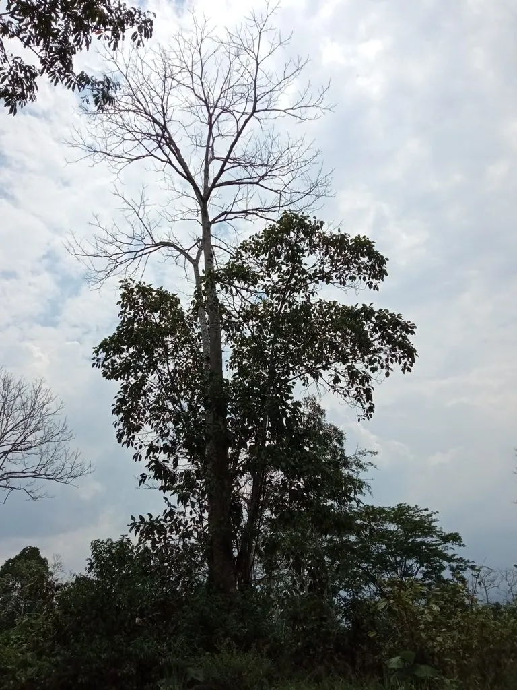

乔木 · 植物界
望天树 Parashorea chinensis

龙脑香科常绿巨乔木，高可达 70 米以上，是中国最高的树种之一，1970 年代发现于西双版纳。
- 分类
- 门被子植物门纲木兰纲目锦葵目科龙脑香科属望天树属
- 栖息环境
- 海拔 300–1100 米的热带季节雨林沟谷与山坡下部，喜高温多湿、静风
- 地理分布
- 中国云南西双版纳、绿春及广西那坡、龙州；越南北部
- 保护级别
- IUCN 濒危（EN）；中国国家一级保护野生植物
物种志
望天树为龙脑香科望天树属常绿大乔木，高 40–70 米，最高纪录约 80 米，树干通直圆满，基部具明显的板状根，树皮灰褐色、块状开裂。叶片互生，革质，椭圆形至卵状披针形，全缘，侧脉明显。花小，黄白色，组成顶生或腋生的圆锥花序，花期 5–6 月；果实为坚果，外包由花萼发育而成的 5 枚翅状萼片，成熟时随翅旋转下落，果期 8–10 月。
望天树原产中国云南西双版纳、绿春及广西那坡、龙州等地，也分布于越南北部，生于海拔 300–1100 米的热带季节雨林中。它喜高温多湿、静风的环境，幼树耐阴，成年后需充足光照，生长较慢，天然更新困难。1975 年，中国植物学家在西双版纳勐腊发现大面积望天树群落，打破了国际上“中国没有热带雨林”的论断，具有重要的科学意义。木材坚硬耐腐，可供建筑与家具；因种群稀少，被列为国家一级保护野生植物。
形态与习性
- 株高40–70 m，最高纪录约 80 m
- 花期5–6 月，花小、黄白色
- 果期8–10 月，坚果具 5 枚翅状萼片
- 光照幼树耐阴，成年树需充足光照
- 水分喜高温多湿，要求空气湿度大
- 土壤热带雨林下的砖红壤，排水良好
- 主要用途建筑与家具用材，热带雨林科研与保护
趣味知识
- 望天树高可达 70 米以上，是中国最高的树种之一。
- 1975 年西双版纳发现望天树群落，打破了“中国无热带雨林”的论断。
- 望天树的果实具 5 枚翅状萼片，成熟后像直升机旋翼一样旋转落地。
- 望天树基部有板状根，可在浅薄的雨林土壤中稳固巨大的树体。